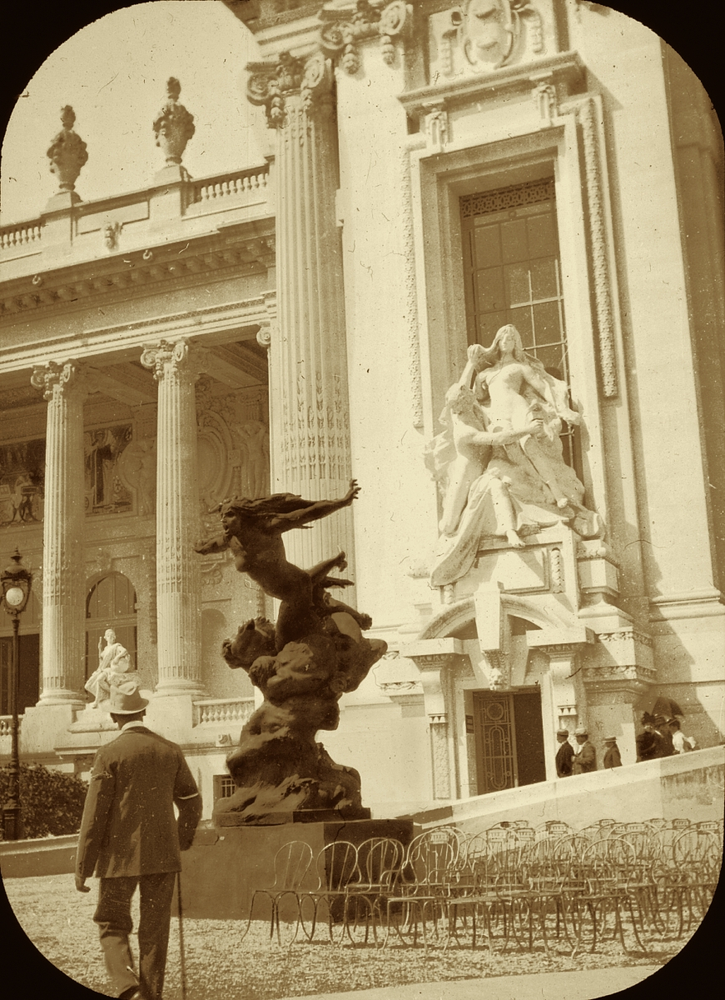

Une Audience à l'Ambassade : Chloé reçue par l'Empereur d'Autriche-Hongrie
Una audiencia en la embajada: Chloé recibida por el Emperador de Austria-Hungría
À travers les couloirs de l'ambassade, un portrait en creux : l'art, la politique et la templance d'un souverain face à la modernité
De l'Élysée à l'Opéra Garnier, une journée marquée par des échanges diplomatiques intenses et la représentation de “Libuše”
Por los pasillos de la embajada, un retrato en negativo: arte, política y templanza de un soberano ante la modernidad
Del Elíseo a la Ópera Garnier, una jornada marcada por intercambios diplomáticos intensos y la representación de “Libuše”

Paris, 21 Mai — On m'a conduite à travers les couloirs de l'ambassade d'Autriche-Hongrie par un secrétaire au pas feutré. Les murs portent des cadres sobres, des portraits d'ancêtres et des vues de Vienne ; l'atmosphère est celle d'un palais qui a vu passer des générations de protocole. Au bout du corridor, une porte s'ouvre : le bureau où l'Empereur reçoit, à l'écart du cérémonial public. Il se lève pour m'accueillir. Un homme d'un certain âge, la posture droite, le regard calme. Rien de théâtral — au contraire, une gravité qui inspire le respect sans intimider.
Nous parlons d'abord de sa visite. Il évoque l'Élysée, le Grand Palais, le pont Alexandre III, puis l'Opéra et "Libuše". Il dit avoir été frappé par la vitalité de la scène parisienne. « Je ne suis plus un jeune homme, et l'avant-garde française pourrait déconcerter quelqu'un qui vient de Vienne. Pourtant, ce que j'ai vu ici — au Louvre, à l'Opéra — m'a convaincu d'une chose : les œuvres qui comptent ne sont pas éphémères. Elles ont un usage pratique. Elles servent la mémoire, le dialogue, la paix. » Il souligne le mot « pratique » avec une pointe de défi amusé, comme s'il répondait à ceux qui voient l'art comme un luxe.
La conversation glisse vers le climat politique. Il parle de l'Europe, des alliances, des malentendus. Sans jamais nommer directement le Kaiser, il laisse entendre que « certains souverains » ont du mal à dialoguer avec la presse et avec l'opinion. « Lorsqu'on refuse la parole aux autres, on finit par ne plus être entendu soi-même. » La phrase est prononcée avec une douceur qui en souligne la portée. Il ajoute qu'il compte répondre « avec gentillesse » aux incidents de ces derniers jours — l'attentat contre l'art, la brûlure du tableau.
Nous en venons à cet épisode. Le tableau de Pallas Athéna, volé puis détruit aux portes de l'Opéra. Je lui demande comment il a vécu cette soirée. Il hoche lentement la tête. « Étrangement, tout s'est déroulé comme prévu. La fonction a eu lieu. Le public est entré. L'art a parlé. » Il fait une pause. « Peut-être parce que nous avons choisi de ne pas donner à cet acte plus d'importance qu'il n'en mérite. La templance, madame, n'est pas de l'indifférence. C'est une forme de réponse. » Je note le « nous » : il s'inclut dans une décision collective, celle de ne pas laisser la violence dicter le programme.
En le quittant, je retiens l'image d'un souverain d'une autre époque — un homme ancien, diraient certains — qui a pourtant su réagir avec une sérénité remarquable au choc de la modernité parisienne. Rien de rigide, rien de blessé. Une templance qui surprend et qui rassure. L'Europe a besoin de ces figures-là. Et Paris, ce matin, peut être fier d'avoir offert à l'Empereur d'Autriche-Hongrie un miroir où il a su se regarder sans se renier.
París, 21 de Mayo — Me condujo por los pasillos de la embajada de Austria-Hungría un secretario de paso discreto. Las paredes llevan marcos sobrios, retratos de antepasados y vistas de Viena; el ambiente es el de un palacio que ha visto pasar generaciones de protocolo. Al fondo del corredor, se abre una puerta: el despacho donde el Emperador recibe, al margen del ceremonial público. Se levanta para recibirme. Un hombre de cierta edad, la postura erguida, la mirada serena. Nada teatral — al contrario, una gravedad que inspira respeto sin intimidar.
Hablamos primero de su visita. Evoca el Elíseo, el Grand Palais, el puente Alexandre III, luego la Ópera y "Libuše". Dice haberse sentido impresionado por la vitalidad de la escena parisina. «Ya no soy un hombre joven, y la vanguardia francesa podría desconcertar a quien llega de Viena. Sin embargo, lo que he visto aquí — en el Louvre, en la Ópera — me ha convencido de una cosa: las obras que cuentan no son efímeras. Tienen un uso práctico. Sirven a la memoria, al diálogo, a la paz. » Subraya la palabra «práctico» con un punto de desafío divertido, como si respondiera a quienes ven el arte como un lujo.
La conversación deriva hacia el clima político. Habla de Europa, de las alianzas, de los malentendidos. Sin nombrar nunca directamente al Kaiser, da a entender que «ciertos soberanos» tienen dificultades para dialogar con la prensa y con la opinión. «Cuando se niega la palabra a los demás, se acaba por no ser escuchado uno mismo.» La frase se pronuncia con una dulzura que subraya su alcance. Añade que piensa responder «con gentileza» a los incidentes de estos últimos días — el atentado contra el arte, la quema del cuadro.
Llegamos a ese episodio. El cuadro de Pallas Atenea, robado y luego destruido a las puertas de la Ópera. Le pregunto cómo vivió esa velada. Asiente con calma. «Extrañamente, todo siguió como estaba previsto. La función tuvo lugar. El público entró. El arte habló.» Hace una pausa. «Quizá porque hemos elegido no dar a ese acto más importancia de la que merece. La templanza, señora, no es indiferencia. Es una forma de respuesta.» Anoto el «nosotros»: se incluye en una decisión colectiva, la de no dejar que la violencia dicte el programa.
Al despedirme, me queda la imagen de un soberano de otra época — un hombre antiguo, dirían algunos — que ha sabido reaccionar con una serenidad notable al choque de la modernidad parisina. Nada rígido, nada ofendido. Una templanza que sorprende y que tranquiliza. Europa necesita figuras así. Y París, esta mañana, puede estar orgulloso de haber ofrecido al Emperador de Austria-Hungría un espejo en el que supo mirarse sin renegar de sí mismo.
Grève à la Filature de Saint-Denis : les Ouvriers Réclament la Journée de Dix Heures et des Salaires Décents
Huelga en la hilatura de Saint-Denis: los obreros reclaman la jornada de diez horas y salarios dignos
Saint-Denis, 21 Mai — Les ouvriers et ouvrières de la filature Mercier, établie depuis vingt ans aux portes de Paris, ont cessé le travail ce matin et se sont rassemblés devant les ateliers pour exiger une réduction de la journée de travail à dix heures, une augmentation des salaires et l'installation de dispositifs de sécurité sur les métiers à tisser. Selon les délégués du syndicat des tisserands, plus de trois cents personnes seraient concernées.
Saint-Denis, 21 de Mayo — Los obreros y obreras de la hilatura Mercier, establecida desde hace veinte años a las puertas de París, han cesado el trabajo esta mañana y se han congregado ante los talleres para exigir la reducción de la jornada a diez horas, un aumento de salarios y la instalación de dispositivos de seguridad en los telares. Según los delegados del sindicato de tejedores, más de trescientas personas estarían afectadas.
La direction a refusé toute négociation tant que « l'ordre ne sera pas rétabli ». Des gendarmes ont été dépêchés sur les lieux ; aucun incident grave n'a été signalé en fin de journée, mais les ouvriers ont annoncé qu'ils maintiendraient le mouvement « aussi longtemps qu'il le faudra ». Des collectes ont été organisées dans les quartiers voisins pour soutenir les familles des grévistes. La Chambre des députés, qui examine depuis des mois des projets sur la durée du travail, suit la situation avec attention.
La dirección ha rechazado toda negociación mientras « no se restablezca el orden ». Se han enviado gendarmes al lugar; no se ha registrado ningún incidente grave al cierre de la jornada, pero los obreros han anunciado que mantendrán el movimiento « todo el tiempo que haga falta ». Se han organizado colectas en los barrios vecinos para sostener a las familias de los huelguistas. La Cámara de diputados, que desde hace meses examina proyectos sobre la duración del trabajo, sigue la situación con atención.
❦ ◆ ❦
Chroniques de la Société
Crónicas de Sociedad
Notes mondaines et événements de la haute société parisienne
Notas mundanas y acontecimientos de la alta sociedad parisina
D'absences et de sauveurs
De ausencias y salvadores
Mes chers lecteurs, vous avez sans doute lu dans ces colonnes — ou dans les nouvelles du jour — le récit de la chute de celui qui avait semé la terreur parmi nous. Je ne reviendrai pas sur les détails, que d'autres ont rapportés avec plus de gravité que ne le ferait votre chroniqueuse. Qu'il me suffise de dire, sur un ton peut-être un peu léger pour un tel sujet : merci. Merci à ceux qui ont veillé dans l'ombre, à nos lumineux paladins, et à la police dont le travail a permis que cette affaire trouve une issue. Certaines absences nous ont fait mal ; d'autres présences nous ont sauvées. À celles et ceux qui ont agi, nous devons une pensée reconnaissante.
Mis queridos lectores, sin duda habréis leído en estas columnas — o en las noticias del día — el relato de la caída de quien sembró el terror entre nosotros. No volveré sobre los detalles, que otros han contado con más gravedad de la que usaría vuestra cronista. Baste decir, en un tono quizá un poco ligero para tal asunto: gracias. Gracias a quienes velaron en la sombra, a nuestros luminosos paladines y a la policía cuyo trabajo ha permitido que este asunto encontrara un desenlace. Algunas ausencias nos hicieron daño; otras presencias nos salvaron. A quienes actuaron, les debemos un pensamiento agradecido.
La Dernière Soirée : Adieu à l'Empereur au Grand Véfour
La última velada: adiós al Emperador en el Grand Véfour
Mes chers lecteurs, quelle soirée que cette cena de despedida au Grand Véfour ! Votre chroniqueuse a eu le privilège d'assister au dernier événement de la visite impériale — un dîner dans ce temple de la gastronomie qu'est Le Grand Véfour, sous les arcades du Palais-Royal. Musique de cordes en direct, discours d'adieu, hommage final à Libuše : tout était digne d'un souverain qui a su conquérir les cœurs parisiens en trois jours à peine.
Les danses ont réuni l'élite parisienne et la noblesse de passage — la Baronne Rothschild, la famille Straus, plusieurs ducs et duchesses dont les noms font encore chuchoter les salons. Au centre de tout, l'Empereur lui-même : un noble caballero en effet, la posture droite, la courtoisie impeccable, saluant chaque invité avec une dignité qui rappelle une autre époque. On ne voit pas souvent un souverain danser avec autant de simplicité et de grâce.
Mais le moment qui a fait chuchoter tout le monde — et votre chroniqueuse ne saurait l'omettre — fut le spectacle offert par la Baronne Rothschild et monsieur Maximilian Belcredi, le duc de Bohême qui est, comme chacun sait, le noble le plus en vue du moment. La baronne dégageait une séduction peu commune ; elle et le duc ont dansé plus d'une fois, et les regards qu'ils échangeaient ne laissaient guère de place au doute. Monsieur Belcredi, paraît-il, n'est pas marié. Quant à la différence d'âge entre eux — mes chers lecteurs, ce n'est qu'un nombre, paraît-il. On murmure même dans les coulisses que ce n'était que le numéro de la table où ils se sont assis. Je ne ferai pas de commentaire ; je me contente de rapporter ce que mes lorgnettes ont vu.
Cette soirée au Grand Véfour aura donc été le point d'orgue d'une visite dont Paris se souviendra. L'Empereur a quitté la capitale ce matin ; les salons reprennent leur rumeur habituelle. Pour ma part, je vous écris à nouveau après une absence de ces colonnes — quelle joie de vous retrouver. À la prochaine, mes chers lecteurs.
Mis queridos lectores, ¡qué velada la de esta cena de despedida en el Grand Véfour! Vuestra cronista ha tenido el privilegio de asistir al último evento de la visita imperial — una cena en ese templo de la gastronomía que es Le Grand Véfour, bajo las arcadas del Palais-Royal. Música de cuerdas en vivo, discursos de despedida, homenaje final a Libuše: todo estuvo a la altura de un soberano que supo conquistar los corazones parisinos en apenas tres días.
Los bailes reunieron a la élite parisina y a la nobleza de paso — la Baronesa Rothschild, la familia Straus, varios duques y duquesas cuyos nombres aún hacen susurrar a los salones. En el centro de todo, el Emperador mismo: un noble caballero en efecto, la postura erguida, la cortesía impecable, saludando a cada invitado con una dignidad que recuerda otra época. No se ve a menudo a un soberano bailar con tanta sencillez y gracia.
Pero el momento que hizo susurrar a todo el mundo — y vuestra cronista no podría omitirlo — fue el que ofrecieron la Baronesa Rothschild y el señor Maximilian Belcredi, el duque de Bohemia que es, como todo el mundo sabe, el noble de moda del momento. La baronesa desprendía una seducción poco común; ella y el duque bailaron más de una vez, y las miradas que se cruzaban no dejaban lugar a dudas. El señor Belcredi, al parecer, no está casado. En cuanto a la diferencia de edad entre ellos — queridos lectores, no es más que un número, al parecer. Se murmura incluso en los bastidores que no era más que el número de la mesa donde se sentaron. No haré comentario; me limito a contar lo que vieron mis anteojos de ópera.
Esta velada en el Grand Véfour habrá sido así el broche de oro de una visita de la que París guardará memoria. El Emperador ha partido de la capital esta mañana; los salones recobran su rumor de siempre. Por mi parte, os escribo de nuevo tras una temporada alejada de estas columnas — qué alegría reencontraros. Hasta la próxima, queridos lectores.